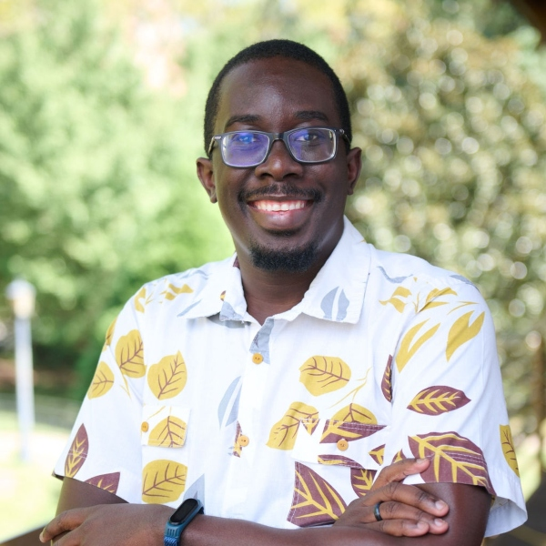

Principal Investigator

Dr. Hodari-Sadiki Hubbard-James
Assistant Professor of Astronomy & Co-Director, Bradley Observatory
Hodari has been Assistant Professor of Astronomy and Co-Director of the Bradley Observatory at Agnes Scott College since July 2023. He received his B.A. in Physics from Berea College, his M.S. in Biomedical Engineering from the University of Cincinnati, and his Ph.D. in Astronomy from Georgia State University. In addition to directing research at the ISLANDS Lab, he teaches courses in astronomy, astrophysics, and data science.
Lab Members
Current Undergraduate Researchers
- Sasha Arbogast (Agnes Scott College) - Radial velocity confirmation of exoplanets around K dwarf stars
- Kayla Gossett Roper (Agnes Scott College) - Astrobiology and photosynthesis under non-solar illumination
- Mai Le (Recent Graduate) - Technosignature analysis and optical follow-up of the Wow! Signal
- Jacinda Byam (College of Charleston) - K dwarf stellar age estimation using Hβ line diagnostics
Graduate Student Collaborator
- Sebastian Carrazco Gaxiola (Georgia State University, PhD Candidate) - Stellar spectroscopy and K dwarf characterization
Alumni
- Daniela Garcia-Lara (Agnes Scott College, 2024-2025)
- Nia Suitt (now at University of Central Florida, 2024-2025)
Collaborators
- Prof. Todd J. Henry (RECONS Institute) - K dwarf stellar characterization
- Prof. Abel Méndez (Planetary Habitability Laboratory, University of Puerto Rico at Arecibo) - Technosignature analysis
- Leonardo Paredes (Steward Observatory, University of Arizona) - Stellar spectroscopy